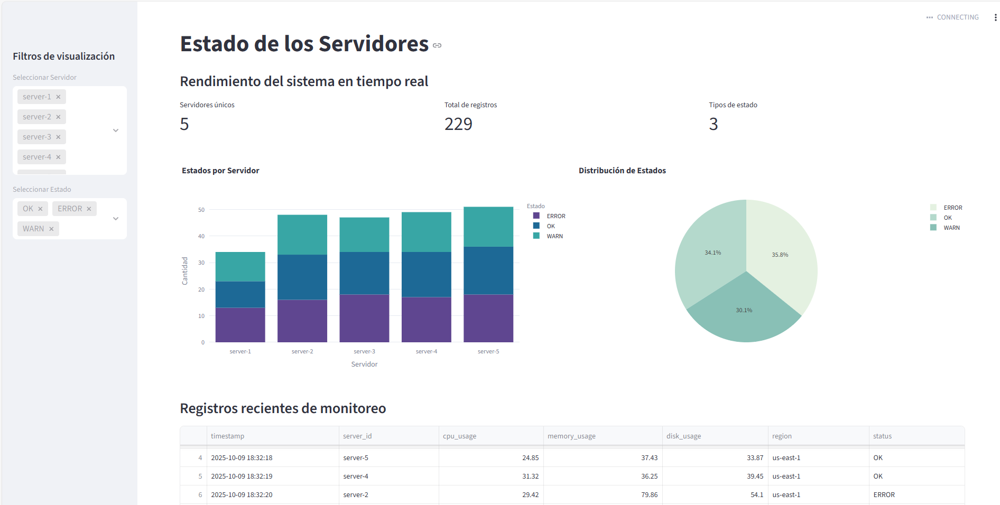

Código Python
import boto3 # Conexión a AWS S3
import pandas as pd # Manipulación de datos
import streamlit as st # Interfaz web interactiva
import plotly.express as px # Visualización de datos moderna
import json
from io import StringIO
# ==============================
# CONFIGURACIÓN DE PÁGINA
# ==============================
st.set_page_config(
page_title="Estado de Servidores | Live Monitor",
layout="wide"
)
# ==============================
# CARGA DE DATOS DESDE S3
# ==============================
@st.cache_data
def cargar_datos():
s3 = boto3.client("s3")
bucket_name = "xideralaws-curso-benjamin2"
prefix = "raw/"
response = s3.list_objects_v2(Bucket=bucket_name, Prefix=prefix)
data_frames = []
if 'Contents' not in response:
return pd.DataFrame()
for obj in response["Contents"]:
key = obj["Key"]
if key.endswith(".json"):
file_obj = s3.get_object(Bucket=bucket_name, Key=key)
content = file_obj["Body"].read().decode("utf-8")
json_data = json.loads(content)
df_temp = pd.json_normalize(json_data)
data_frames.append(df_temp)
if not data_frames:
return pd.DataFrame()
df = pd.concat(data_frames, ignore_index=True)
df["timestamp"] = pd.to_datetime(df["timestamp"])
return df
# ==============================
# TÍTULO
# ==============================
st.title("Estado de los Servidores")
st.subheader("Rendimiento del sistema en tiempo real")
# ==============================
# CARGAR DATOS
# ==============================
df = cargar_datos()
if df.empty:
st.warning("No se encontraron registros en el sistema.")
st.stop()
# ==============================
# FILTROS LATERALES
# ==============================
st.sidebar.header("Filtros de visualización")
servers = sorted(df['server_id'].unique())
statuses = sorted(df['status'].unique())
server_filter = st.sidebar.multiselect("Seleccionar Servidor", options=servers, default=servers)
status_filter = st.sidebar.multiselect("Seleccionar Estado", options=statuses, default=statuses)
filtered = df[
(df['server_id'].isin(server_filter)) &
(df['status'].isin(status_filter))
]
# ==============================
# MÉTRICAS PRINCIPALES
# ==============================
total_servidores = df['server_id'].nunique()
total_registros = len(df)
status_unicos = df['status'].nunique()
col1, col2, col3 = st.columns(3)
col1.metric("Servidores únicos", total_servidores)
col2.metric("Total de registros", total_registros)
col3.metric("Tipos de estado", status_unicos)
# ==============================
# GRÁFICAS PRINCIPALES
# ==============================
col1, col2 = st.columns(2)
with col1:
conteo_estados = filtered.groupby(["server_id", "status"]).size().reset_index(name="count")
fig1 = px.bar(
conteo_estados,
x="server_id",
y="count",
color="status",
title="Estados por Servidor",
labels={"server_id": "Servidor", "count": "Cantidad", "status": "Estado"},
color_discrete_sequence=px.colors.qualitative.Prism # Paleta personalizada
)
st.plotly_chart(fig1, use_container_width=True)
with col2:
total_status_counts = filtered['status'].value_counts().reset_index()
total_status_counts.columns = ['status', 'count']
fig2 = px.pie(
total_status_counts,
names='status',
values='count',
title="Distribución de Estados",
color_discrete_sequence=px.colors.sequential.Mint
)
st.plotly_chart(fig2, use_container_width=True)
# ==============================
# TABLA DE DATOS
# ==============================
st.subheader("Registros recientes de monitoreo")
st.dataframe(filtered.head(30), use_container_width=True)
# ==============================
# BOTÓN PARA ACTUALIZAR
# ==============================
st.markdown("---")
if st.button("Actualizar"):
st.experimental_rerun()
Ver código completo en GitHub
Captura del Dashboard

Captura del Kernel